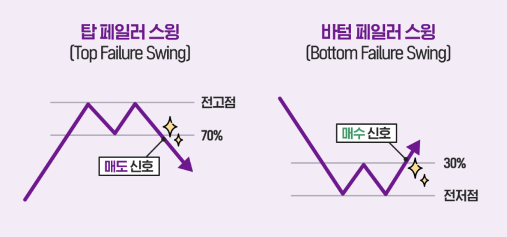

RSI(상대강도지수)
14일동안 상승폭이 큰지 하락폭이 큰지 볼 수 있는 지표
- RSI 지표가 높다면 매수세가 높고 주가의 하락보다 상승이 크다는 의미이고 낮다면 매도세가 높고 상승보다 하락이 크다는 의미
- RSI 지표가 0에 가까워지는 것은 주가가 장기간 하락중으로 주가가 오를 확률이 높다는 의미이고, 100에 가까워지는 것은 과도하게 올랐다는 의미로 주가가 내릴 확률이 높다는 의미
RSI 구간
70이상은 과매수 구간
- 70이상은 현재 주가가 과열상태
- 매수가 많이 일어나 가격이 오를 대로 올라 하락 확률이 높다는 의미로 매도를 고려
30이하는 과매도 구간
- 30이하는 현재 주가가 침체상태
- 매도가 많이 일어나서 가격이 떨어졌으니 상승 확률이 높다는 의미로 매수를 고려
- 30이하에서는 장기적으로 하락 가능성도 있기 때문에 매수에 '신중함'이 필요
50구간
매도세력 또는 매수세력이 우세한 경우 각 추세가 전환되지 않도록 지지 또는 저항하는 역할로 주가의 상승 또는 하락 추세의 전환 지점이라는 의미
- 상승분과 하락분이 '균형'을 이루는 지점
- 50을 돌파하면 매수세력이 우세
- 50을 이탈하면 매도세력이 우세
다이버전스 상태
주가와 RSI지표의 추세가 반대로 나타나는 경우를 다이버전스라고 한다.
다이버전스는 매수, 매도 타이밍을 잡을 때 강력한 신호로 해석할 수 있기 때문에 RSI 지표를 분석할 때 중요하다.
- 주가는 하락 추세인데 RSI 지표가 오르면 상승 전환이 기대되는 강세 다이버전스로 매수 고려
- 주가는 상승 추세인데 RSI 지표가 떨어지면 하락 전환이 우려되는 약세 다이버전스로 매도 고려
페일러 스윙
탑 페일러 스윙
RIS 지표가 70%이상 구간에서 직전 고점을 돌파하지 못하고 떨어지면 주가가 하락할 것으로 보고 매도
바텀 페일러 스윙
RSI 지표가 30%미만 구간에서 직전 고점보다 높을 때 하락 추세가 마무리 될 것으로 보고 매수

매수 매도
매수 타이밍
- 30선 하락 후 다시 30~40선 돌파할 때 매수
- RSI가 Signal선을 상향 돌파하면 매수
- 주가가 하락하는데 RSI가 하락하지 않는다면 상승 전환이 예상
- 탑 페일러 스윙
- 하락기에 거래량이 높다면 주가는 올라갈 확률이 높다.
매도 타이밍
- 70선 돌파 후 다시 70~60선 이탈할 때 매도
- RSI가 Signal선을 하향 돌파하면 매도
- 주간차트에서 과매도 신호는 신뢰도가 매우 높다.
- 바턴 페일러 스윙
- 상승기에 거래량이 적다면 주가는 내려갈 확률이 높다.
MFI
RSI는 단순히 가격 변동의 추세만을 나타내는데 비해 MFI는 거래량까지 반영한 입체적인 지표
RSI가 올라가지만 MFI가 따라가지 못한다면 거래량 없이 올라가는 상승이라고 판단할 수 있다.
매수 매도
매수 타이밍
매도 타이밍
https://blog.naver.com/letaru/222789142267
앞에서 장대양봉을 만들며 바닥에서 주가를 끌어올린 것은 매집으로 볼 수 있다고 했다
https://traderk10.tistory.com/entry/%ED%8A%B8%EB%A0%88%EC%9D%B4%EB%8D%94-%EC%B5%9C%EA%B3%A0%EB%AC%B4%EA%B8%B0-RSI-%EC%83%81%EB%8C%80%EA%B0%95%EB%8F%84%EC%A7%80%EC%88%98